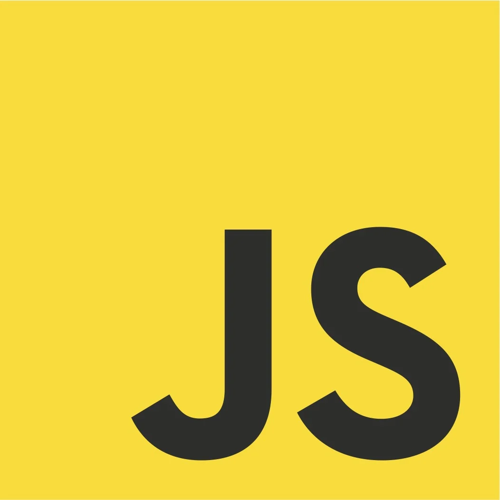
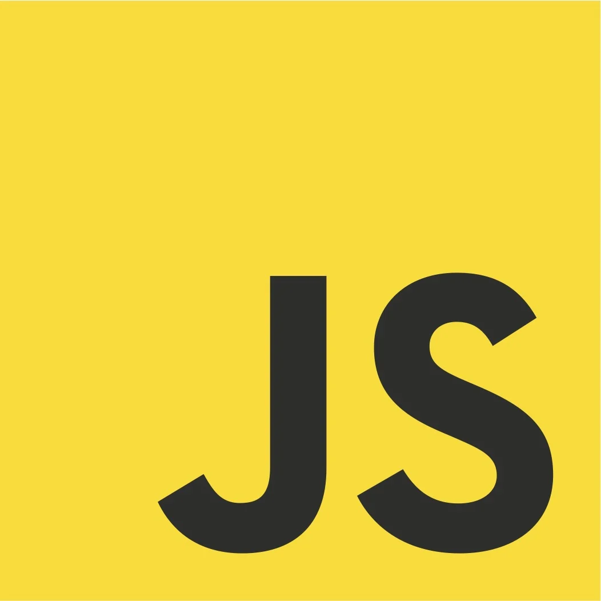
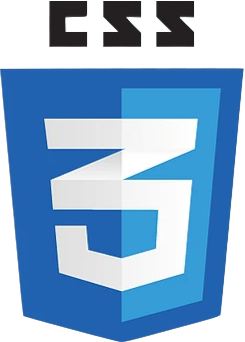
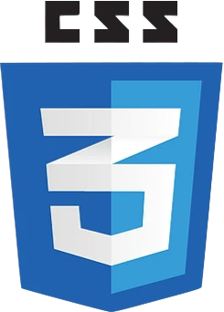
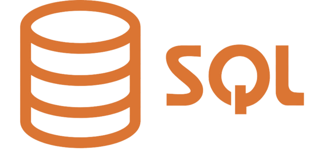
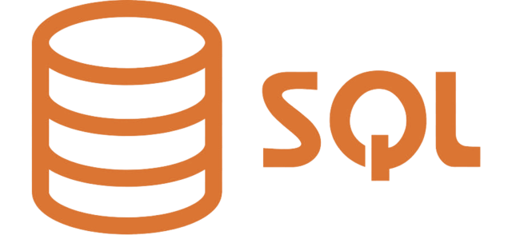
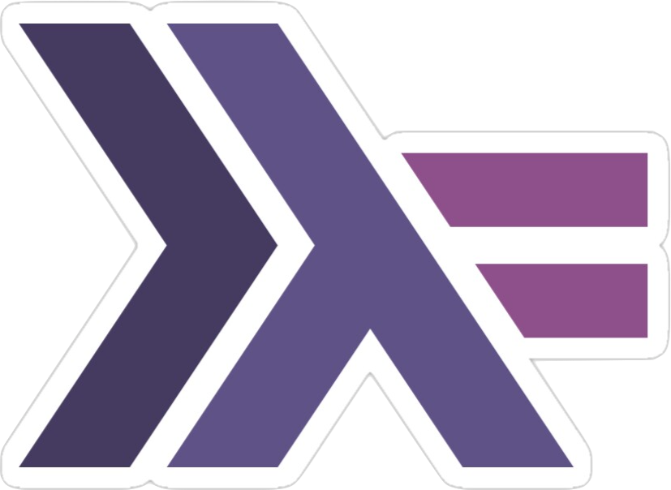
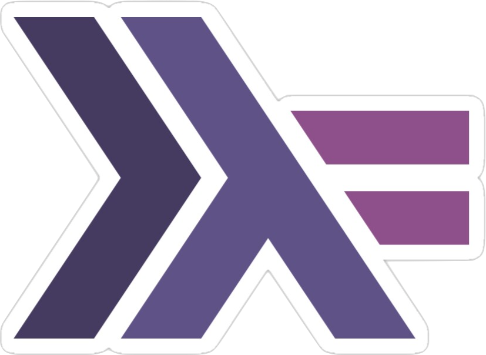

Hi, my name is
Bryan Le
An aspiring cybersec expert
Hey there! 👋
I'm a recent Computer Science graduate from UNSW, based in Sydney, Australia. I have a strong passion for software engineering, with a particular interest in cybersecurity. I love exploring how technology shapes our world and enjoy building secure, innovative solutions that make a real impact.
1. About me
Hello! I'm Bryan, a recent Computer Science graduate from UNSW with a strong interest in cybersecurity. My passion for this field began during my studies, where I delved into web vulnerabilities and the intricacies of network security. I find great satisfaction in learning new technologies and applying them to solve real-world problems, and I actively participate in Capture the Flag (CTF) competitions to hone my skills.
During my time at UNSW, I gained experience in penetration testing a vulnerable web server and developing a vulnerability report. I am eager to contribute my knowledge and enthusiasm to a challenging role in the cybersecurity industry, where I can continue to expand my expertise and make a meaningful impact.
I am particularly interested in web application security, penetration testing, digital forensics, network security, and MUCH more. I am always looking for opportunities to learn and grow, and I am confident that I can make a valuable contribution to your team.
Languages I've worked with:
 

 



 


 

2. Tools I've worked with
Burp Suite
Powerful web vulnerability scanner and proxy for penetration testing.

Wireshark
Industry-standard network protocol analyser for deep packet inspection.
Nmap
Versatile network scanner for host discovery and security auditing.
SQLmap
Automated tool for detecting and exploiting SQL injection vulnerabilities.
Kali Linux
A Debian-based Linux distribution designed for digital forensics and penetration testing.
3. Skills
Website attacks
I have experience identifying a wide range of web application vulnerabilities, including injection attacks such as SQL injection (SQLi), cross-site scripting (XSS) in its stored, reflected, and DOM-based forms, command injection, and XML injection. Additionally, I am skilled at uncovering session management flaws, cross-site request forgery (CSRF), server-side request forgery (SSRF), and file upload vulnerabilities. My expertise enables me to assess risks that could lead to unauthorised access to databases, administrative panels, and server backdoors.
Password attacks
I am proficient in various password attack techniques, including brute-forcing, dictionary, cryptanalysis, and pass-the-hash attacks. I also utilise social engineering methods such as phishing and vishing to assess the resilience of authentication mechanisms. These skills allow me to evaluate the security of user accounts and recommend effective countermeasures.
Network attacks
I am skilled in network analysis and attack methods, utilising tools like Wireshark to monitor network traffic. I can perform man-in-the-middle (MITM) attacks to identify vulnerabilities and potential entry points. My expertise helps strengthen network defenses against unauthorised access.
Reverse engineering
I have hands-on experience with reverse engineering tools such as Binary Ninja, Wireshark, and Cheat Engine to analyse binaries and network protocols. This allows me to uncover hidden vulnerabilities, understand malware behavior, and assess the security of compiled applications. My reverse engineering skills are essential for vulnerability research and developing effective mitigation strategies.
4. Let's get in touch!
I’m currently looking for new opportunities. My inbox is always open—whether you have a question or just want to say hi, I’ll try my best to get back to you!